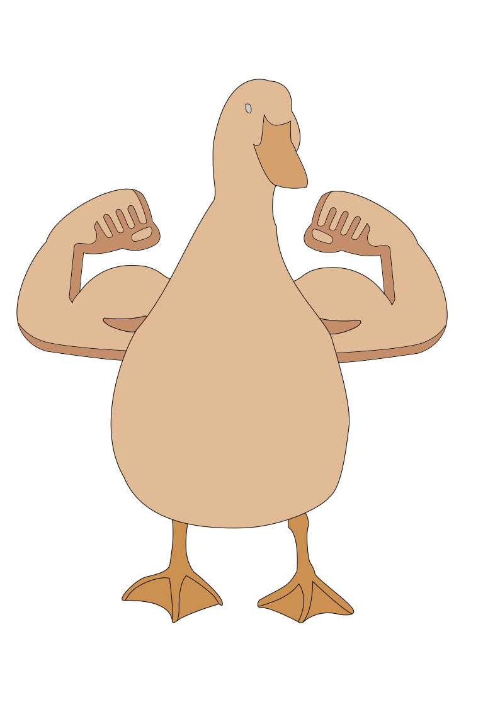

Image Creation
Pixel Art

Green Screen Adventures

Character Creation
Evaluation
I beleive I have done pretty well in three weeks on these three creations. Softwares I used were Inkscape and GIMP. New skills I learnd were creating pixel art, removing greenscreen, and creating backgrounds. I enjoyed this topic as it was lots of fun and I learnt new skills.
I could use these skills in my term 4 project as I can use these skills to create characters, levels, objects for a game.